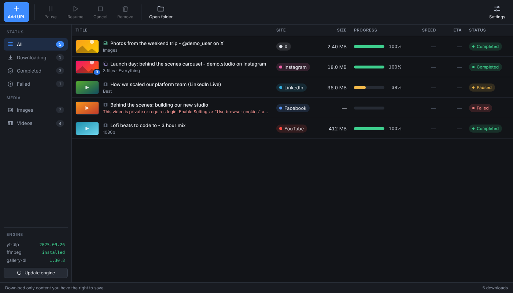
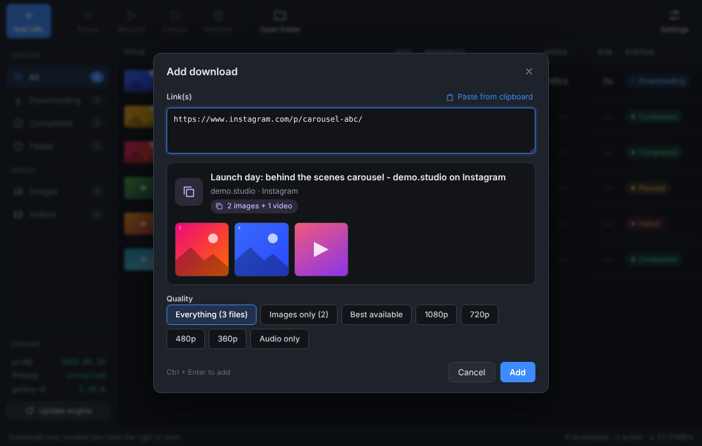

Paste a link, pick the quality, download. LinkGrab is a free, open-source download manager for videos and images from YouTube, Facebook, LinkedIn, X (Twitter) and Instagram, with a queue, pause and resume.
Windows 10/11 x64: installer or portable app. macOS and Linux: run from source (experimental). The app is unsigned, so Windows SmartScreen may ask you to choose "More info", then "Run anyway".


Interface preview with demo data.
Videos at best, 1080p, 720p, 480p or 360p, or audio only.
Public videos and reels; private ones with your browser login.
Post and feed videos you can view.
Videos, photos and mixed posts in original quality.
Reels, photos and carousels, saved as numbered files in a folder.
| LinkGrab | IDM | |
|---|---|---|
| Price | Free, open source | Paid, with a trial |
| Social video and image links | YouTube, Facebook, LinkedIn, X, Instagram | Video grabbing from many sites through its browser integration |
| Browser integration | No. You paste or drag a link | Yes |
| Accelerates any file download | No | Yes |
| Queue, pause, resume | Yes | Yes |
| Platforms | Windows installer; macOS and Linux from source | Windows |
LinkGrab is an independent project and is not affiliated with or endorsed by Internet Download Manager or its makers.
It covers one part of what IDM does: a queue-based desktop downloader with progress, pause and resume for videos and images from YouTube, Facebook, LinkedIn, X and Instagram. It does not integrate with your browser and does not accelerate arbitrary file downloads.
There is no packaged Mac app yet. The Windows installer and portable app are the supported builds. On macOS and Linux you can run LinkGrab from source with Node.js (experimental); on a Mac, install ffmpeg and gallery-dl with Homebrew.
Yes. It is free and open source under the MIT license.
Instagram nearly always requires a logged-in session. In Settings, choose the browser where you are signed in under "Use browser cookies". The cookies stay on your PC and are only passed to the local download engines.
Only download content you own or have permission to download, and respect each site's terms of service and copyright law.